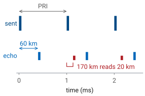
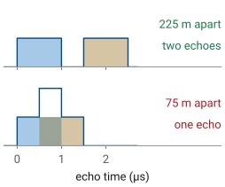
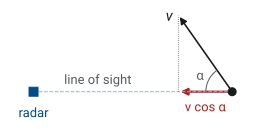
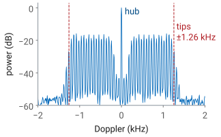
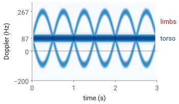

L26 - Range, Resolution, and Doppler#
Range, Resolution, and Doppler
What an echo’s delay, bandwidth, and frequency shift say about a target’s range and speed.
Lesson 26 · Antennas, Phased Arrays, and Radar Systems · Dr. Neil Rogers
Printing
To print the slides, switch to present mode and print: one slide a sheet, with room for notes. Print from read mode for the whole lesson.
Learning Objectives
- I can calculate range resolution, unambiguous range, and Doppler shift for a given radar waveform.
L25 answered how much power comes back from a target: the radar equation is the Friis equation of L2 applied twice, once on the way out and once on the way back, with the target’s radar cross section in the middle. This lesson asks what else the echo carries. Its delay gives the range, its bandwidth sets how close two targets can be and still be told apart, and its frequency shift gives the target’s speed along the line of sight. Each of these depends on the waveform the radar sends, and the choices that improve one usually limit another. The L28 through L31 Labs measure every quantity defined here on your own kit, so the numbers in this lesson are the ones you will check there.
What an Echo Carries
Range from the round-trip delay.
Radial velocity from the Doppler shift.
Angle from the array: the beam sweep of L19, monopulse in the L24 Lab.
Size from the received power: L25’s radar equation and RCS.
A radar sends a known signal and listens for the copy a target reflects. The copy differs from what was sent in four ways, and each difference is a measurement. It arrives late, by the time the wave needs to reach the target and come back, which gives range. It arrives shifted in frequency if the target is moving toward or away from the radar, which gives radial velocity. It arrives with a phase ramp across the array that depends on its direction, which Module 3 turned into an angle: the beam sweep of L19 reads it with one channel, and the monopulse comparison of the two subarray channels in the L24 Lab reads it in a single snapshot. And it arrives weaker by an amount the radar equation of L25 predicts, so the received power says something about the target’s cross section.
This lesson covers the first two. Angle and power are already in hand, and L27 combines them with noise to decide whether an echo is there at all.
Range From Round-Trip Delay
The wave travels to the target and back: \(2R\) in all.
6.67 ns of delay per meter of range.
A target 3 m from the kit returns after 20 ns; one 6 km out, after \(40\ \mu\text{s}\).
The transmitted wave travels at \(c\) out to the target, reflects, and travels the same distance back, so the echo arrives a time \(\tau = 2R/c\) after the transmission. Turned around, a measured delay gives the range,
The factor of 2 is the one detail of this relation that is easy to lose: range is half the distance the wave covered. With \(c = 3.00\times 10^8\ \text{m/s}\), every meter of range adds \(2/c = 6.67\ \text{ns}\) of delay. A target across the lab, 3 m from the kit, returns its echo after 20 ns, which is far too short to time directly with the Pluto’s sample clock; L28 shows how the FMCW waveform converts that delay into a frequency the Pluto can measure. An aircraft 6 km out returns its echo after \(40\ \mu\text{s}\), which a pulsed radar times directly.
Unambiguous Range
An echo must return before the next pulse leaves.
PRF 1 kHz: \(R_\text{ua} = 150\ \text{km}\).
A target at 170 km appears at 20 km.

A pulsed radar does not send one pulse; it sends a train of them, one every pulse repetition interval \(T_\text{PRI}\), at a pulse repetition frequency \(\text{PRF} = 1/T_\text{PRI}\). The receiver times each echo from the most recent pulse, because it has no way to tell which pulse an echo belongs to. That works as long as every echo comes back before the next pulse leaves, which holds for every target closer than
the unambiguous range. At a PRF of 1 kHz it is 150 km. A target farther out still reflects, but its echo arrives after the next pulse has gone out, and the receiver times it from that pulse. In the figure a target at 170 km returns its echo 1.133 ms after its pulse, which is 0.133 ms after the next one, so the radar reports it at \(170 - 150 = 20\ \text{km}\). Radars resolve this by changing the PRF from one burst to the next: a true range stays put, and a folded one moves.
Range Resolution of a Pulse
Echoes closer than one pulse length in time merge.
\(\tau_p = 1\ \mu\text{s}\): \(\Delta R = 150\ \text{m}\).

Resolution is the ability to report two targets as two. Suppose two targets sit \(\Delta R\) apart in range, and the radar sends a pulse of length \(\tau_p\). Their echoes are each \(\tau_p\) long and start \(2\Delta R/c\) apart. When that gap is longer than the pulse, the receiver sees two echoes with a quiet interval between them; when it is shorter, the echoes overlap, and the receiver sees a single longer echo it cannot split. The boundary is \(2\Delta R/c = \tau_p\), so the range resolution is
A \(1\ \mu\text{s}\) pulse resolves targets 150 m apart. In the figure the targets 225 m apart give two echoes, and the targets 75 m apart give one, a little taller where they overlap.
Resolution Is Set by Bandwidth
A short pulse has bandwidth \(B \approx 1/\tau_p\).
A chirp sweeps \(B\) in a long pulse: resolution and energy together.
The PHASER chirp sweeps 500 MHz.
A short pulse resolves well but carries little energy, since energy is power times duration, and every transmitter has a peak-power limit. Detection, L27’s subject, wants energy; resolution wants a short pulse. The way out is to notice what a short pulse provides. A pulse of length \(\tau_p\) occupies a bandwidth of about \(B \approx 1/\tau_p\), so the resolution can be written
This form is the general one. What separates two echoes is the bandwidth of the waveform, not its length. A chirp, a pulse whose frequency sweeps across \(B\) during a long transmission, has the bandwidth of a short pulse and the energy of a long one, and processing that undoes the sweep (pulse compression, in a pulsed radar) recovers the resolution \(c/2B\). ADI’s FMCW lab sweeps the PHASER’s transmitter across 500 MHz, which gives \(\Delta R = 0.30\ \text{m}\): two corner reflectors on the bench must be more than 30 cm apart in range to appear as two. L28 derives the FMCW version of this result.
Key Point
The PRF sets how far the radar can see without ambiguity. The bandwidth sets how finely it resolves in range. Neither depends on the other, or on the transmit power.
The Doppler Shift
\(v_r = -dR/dt\), the closing speed.
At 10 GHz, \(\lambda = 3.0\ \text{cm}\): 66.7 Hz per \(\text{m/s}\).
The echo’s phase records the round trip. A wave that travels \(2R\) picks up a phase of \(-k(2R) = -4\pi R/\lambda\) relative to the transmitted signal. If the target moves, \(R\) changes with time and so does that phase, and a phase that changes steadily with time is a frequency. Differentiating gives the Doppler shift
where \(v_r = -dR/dt\) is the rate at which the range is closing. The 2 is the same factor as in \(R = c\tau/2\): the path changes twice as fast as the range. At a 10 GHz carrier, \(\lambda = 3.0\ \text{cm}\) and each meter per second of closing speed shifts the echo by 66.7 Hz.
Which Direction Is Positive
Closing: the path shortens, the echo rises in frequency, \(f_D > 0\).
Opening: the echo falls, \(f_D < 0\).
Only the radial component counts: \(v_r = v\cos\alpha\).
A target crossing the line of sight has \(f_D = 0\).

The course convention is the usual one: a target moving toward the radar has positive \(v_r\) and a positive Doppler shift. As the range shrinks, each wave crest has a shorter trip than the one before, so the crests arrive closer together and the echo’s frequency is higher than the transmitted one. A target moving away stretches the crest spacing and shifts the echo down.
Only motion along the line of sight changes the range. A target moving at speed \(v\) in a direction \(\alpha\) off the line of sight has
An aircraft at 200 m/s flying 60° off the line of sight closes at 100 m/s and shifts a 10 GHz echo by 6.67 kHz. One crossing the line of sight at \(\alpha = 90^\circ\) has no Doppler shift at all, which is why a Doppler radar can lose a target that is moving fast but tangentially.
The Shift Is Small
\(100\ \text{mph} = 44.7\ \text{m/s}\) |
\(\lambda\) |
\(f_D\) |
|---|---|---|
2.4 GHz |
12.5 cm |
715 Hz |
10 GHz |
3.0 cm |
2980 Hz |
2980 Hz is \(3\times 10^{-7}\) of the carrier.
The radar measures the difference from what it sent.
ADI’s CW radar lab (Analog Devices, “CW Radar with Phaser”) takes a car at 100 mph as its example. In meters per second that is 44.7 m/s, and
at 2.4 and 10 GHz. ADI quotes 716 and 2982 Hz; the difference is only the value of \(c\), which they take as \(2.998\times 10^8\) rather than the course’s \(3.00\times 10^8\ \text{m/s}\). A higher carrier gives a larger shift for the same speed, since \(f_D\) scales as \(1/\lambda\).
Both shifts are tiny next to the carrier. No receiver could measure a 10.000003 GHz echo directly against a 10 GHz reference with any accuracy, so a Doppler radar compares the echo with its own transmitted signal and keeps only the difference, which comes out at a few hundred or thousand hertz, where the Pluto digitizes it easily.
Doppler Resolution and Ambiguity
Listening for \(T\) resolves \(1/T\) in frequency.
Pulses sample the Doppler at the PRF: \(\pm\text{PRF}/2\) is unambiguous.
256 pulses, 0.5 ms apart: 0.12 m/s, ±15 m/s.
Range and Doppler have the same two limits. To tell two frequencies apart, the radar has to watch the echo long enough for them to drift a full cycle apart, so an observation of length \(T\) resolves frequencies \(1/T\) apart. Divided through by \(2/\lambda\), that is a velocity resolution
A pulsed radar sees the target only once per pulse, so it samples the Doppler phase at the PRF, and by the sampling theorem it can only tell apart Doppler shifts within \(\pm\text{PRF}/2\). A faster target aliases into that window and reports the wrong speed, possibly the wrong sign. The unambiguous velocity is
ADI’s range-Doppler lab (Analog Devices, “Range Doppler Radar Processing”) sends a burst of 256 chirps, 0.5 ms apart, near 10 GHz. The burst lasts \(T = 128\ \text{ms}\), so it resolves 7.8 Hz, or 0.12 m/s, and its unambiguous velocity is ±15 m/s. A person walking is well inside that window; a car on a highway is not. L29 builds the range-Doppler map from exactly this kind of burst.
One PRF, Two Limits
Raising the PRF extends velocity and shortens range.
At 10 GHz the product is \(1.1\times 10^6\ \text{m}^2/\text{s}\).
PRF 1 kHz: 150 km and ±7.5 m/s.
The PRF appears in both unambiguous limits, on opposite sides. A low PRF leaves a long listening time between pulses, so the unambiguous range is long, but it samples the Doppler slowly, so the unambiguous velocity is small. A high PRF does the reverse. The product of the two does not depend on the PRF at all:
At 10 GHz that is \(1.1\times 10^6\ \text{m}^2/\text{s}\). A 1 kHz PRF gives 150 km of unambiguous range and only ±7.5 m/s of unambiguous velocity, slower than a bicycle. An airborne radar that must report both range and closing speed for fast aircraft cannot satisfy both limits with one PRF, so it switches among several and works out the true range and velocity from how the readings move, the same idea used against a folded range above.
Folded Range and Aliased Speed
The widget is a pulsed radar at 10 GHz. Set the PRF, then place a target with the range and closing-speed sliders. The shaded band on each axis is the unambiguous window the PRF allows, 0 to \(R_\text{ua}\) in range and \(\pm v_\text{ua}\) in speed. The open circle is the target’s true value and the solid one is what the radar reports; when the target lies outside a window, the report folds back into it and turns red. It opens on the case from the previous frames: at 1 kHz a target at 170 km reads 20 km, and one closing at 20 m/s reads +5 m/s. Raise the PRF until the speed reads correctly and watch the range window shrink below the target: no PRF reports both this target’s range and its speed correctly.
Pulsed and Continuous-Wave Radar
Pulsed |
Continuous wave |
|
|---|---|---|
Transmit |
then listen |
while listening |
Antennas |
one, shared |
separate Tx and Rx |
Power |
high peak |
low, steady |
Best at |
long range |
short range |
ADI’s radar setup page (Analog Devices, “Setup the Phaser for Radar”) divides radars into two families. A pulsed radar transmits a short, powerful pulse, switches its one antenna over to the receiver, and listens until the next pulse. It times echoes directly, reaches long ranges because its peak power is high, and cannot hear anything while it transmits: a target closer than \(c\tau_p/2\) returns its echo while the pulse is still going out.
A continuous-wave (CW) radar transmits and receives at the same time. Its transmitter never switches off, so it needs a separate transmit antenna, far enough from the receive antenna that the leakage between them does not swamp the echo. Its average power is modest, which suits short ranges, and it has no blind zone near the radar. That makes it the right choice for a radar on a lab bench. The PHASER is set up this way: the transmit antenna on OUT2 sits beside the eight-element receive array, at the same height.
CW Radar: Speed but No Range
A pure tone has no time mark, so no delay to measure.
The echo differs from the transmission only by \(f_D\).
Every mover in the beam shares one spectrum.
FMCW (L28) sweeps the frequency to add a time mark.
The simplest CW radar sends a single unmodulated tone. Its echo is the same tone, delayed and shifted by \(f_D\). The shift is easy to measure: compare the echo with the transmitted tone and the difference is a sine wave at \(f_D\), whose frequency an FFT reads directly. The delay is not measurable at all. Every cycle of a pure tone looks like every other cycle, so there is no feature in the echo to time against the transmission. A CW radar therefore measures speed but not range, which is what a police speed radar needs and no more.
The FFT of the CW echo is one spectrum for the whole beam. A car and a fence behind it both reflect; the fence sits at 0 Hz and the car at its \(f_D\), and two cars at the same speed fall in the same bin regardless of range. L28’s FMCW waveform restores the time mark: it sweeps the transmitted frequency in a ramp, so the frequency of the echo says when it was sent, and the delay becomes a measurable frequency difference.
The Fan Demo
Edge-on, each point of a blade swings along the line of sight.
0.3 m fan at 1200 rpm: tips at 18.8 m/s, ±1.26 kHz.
The hub and stand sit at 0 Hz.

ADI’s CW lab points the PHASER at a variable-speed fan and shows its Doppler spectrum as a running waterfall. ADI’s script takes 65,536 samples at 0.6 MHz for each spectrum, 109 ms of echo, so by \(\Delta f = 1/T\) its bins are 9.2 Hz wide, or 0.14 m/s at 10 GHz.
A fan is a useful target because it holds still and moves at the same time. Seen edge-on, a point on a blade at radius \(\rho\) swings toward and away from the radar at up to \(\Omega\rho\), where \(\Omega\) is the rotation rate in radians per second. The tips move fastest: a 0.3 m fan at 1200 rpm has a tip speed
and so a Doppler shift of up to \(\pm 2(18.8)/0.030 = \pm 1.26\ \text{kHz}\). The spectrum fills the band between, one return for each part of each blade, while the hub and the stand stay at 0 Hz. Speed the fan up and the band widens in proportion; the edge of the band measures the tip speed. Face the fan head-on and the blades move across the line of sight instead of along it, and the band collapses toward 0 Hz. The line spacing in the figure comes from the three blades passing 20 times a second, 60 Hz.
A First Look at Micro-Doppler
Moving parts add their own Doppler around the body’s.
A walker’s torso at 1.3 m/s is 87 Hz; limbs swing to 4.0 m/s, 267 Hz.
The pattern identifies the target (L31).

The fan shows the general idea. A target is rarely one rigid body moving at one speed. A walker’s torso approaches at a steady speed, while the arms and legs swing forward and back about it; a helicopter’s rotor spins on top of a fuselage; a drone’s propellers spin on a hovering frame. Each moving part adds a Doppler shift of its own on top of the body’s, and the extra shifts, called micro-Doppler, change in time with the motion.
A single spectrum blurs those changes together. A spectrogram, a run of short spectra plotted against time, shows them. The figure is a simulation of a walker approaching at 1.3 m/s at 10 GHz: the torso is the steady line at 87 Hz, and two limbs swinging in opposite phase, once a second, trace sinusoids that reach 267 Hz (4.0 m/s) going forward and about −93 Hz going back. The spectrogram trades resolution for time: each column uses 64 ms of echo, so it resolves only about 16 Hz, by the same \(\Delta f = 1/T\).
A walker, a fan, and a swinging pendulum produce three distinct patterns. L31 turns those patterns into features, and the L31 Lab classifies targets from spectrograms recorded on your own kit.
Summary: Range
Symbol / idea |
What it is |
Number to remember |
|---|---|---|
\(R = c\tau/2\) |
range from round-trip delay |
6.67 ns per meter |
\(R_\text{ua} = c/(2\ \text{PRF})\) |
unambiguous range |
150 km at 1 kHz |
\(\Delta R = c\tau_p/2 = c/2B\) |
range resolution |
150 m at \(1\ \mu\text{s}\); 0.30 m at 500 MHz |
pulsed vs CW |
transmit then listen, or both at once |
CW needs separate antennas |
Summary: Doppler
Symbol / idea |
What it is |
Number to remember |
|---|---|---|
\(f_D = 2v_r/\lambda\) |
Doppler shift, positive when closing |
66.7 Hz per \(\text{m/s}\) at 10 GHz |
\(v_r = v\cos\alpha\) |
only the radial component counts |
0 for a crossing target |
\(\Delta v = \lambda/2T\) |
velocity resolution |
0.12 m/s for 128 ms |
\(v_\text{ua} = \pm\lambda\ \text{PRF}/4\) |
unambiguous velocity |
±15 m/s at 2 kHz |
\(R_\text{ua}v_\text{ua} = c\lambda/8\) |
one PRF sets both limits |
\(1.1\times 10^6\ \text{m}^2/\text{s}\) at 10 GHz |
micro-Doppler |
moving parts’ own Doppler |
walker limbs to 267 Hz |
Practice
Looking Ahead
L27: is an echo there at all, against the noise?
L28: FMCW turns delay into a beat frequency, with \(\Delta R = c/2B\).
L29: range and Doppler together, from a burst of chirps.
L31: micro-Doppler spectrograms for classification.
Every quantity in this lesson comes back in the labs. L27 adds noise and asks how reliably a radar decides that an echo is present. L28 sets up the PHASER’s FMCW mode, where the chirp’s 500 MHz sets the 0.30 m range resolution and the delay of each echo appears as a beat frequency; the L28 Lab measures it on corner reflectors. L29 sends a burst of chirps and forms the range-Doppler map, with the velocity resolution and the unambiguous velocity defined here as its axes. L31 returns to micro-Doppler and classifies targets from their spectrograms. Bring this lesson’s numbers to each of those labs: every pre-lab starts from a prediction made with them.